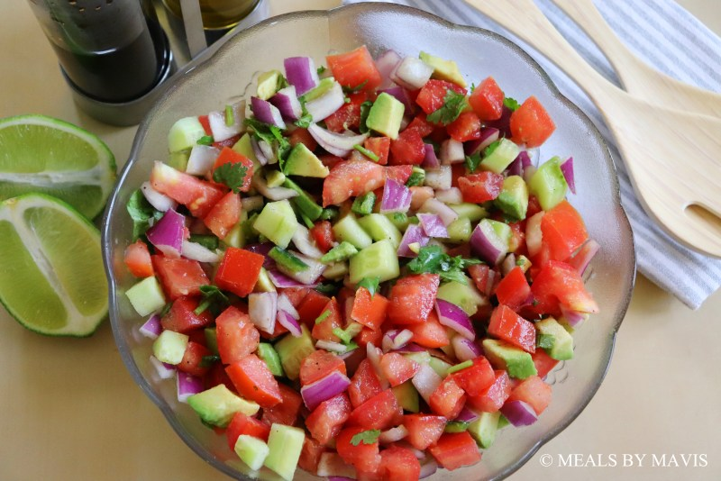

Kachumbari Recipe

Description
Kachumbari is a popular, refreshing, uncooked salad from East Africa, especially Kenya, Tanzania, and Uganda. The preparation of this dish varies, but it always consists of a base of fresh, chopped tomatoes and onions, often seasoned with lemon or lime juice and salt. It is enjoyed as a side dish or condiment alongside many East African meals, including grilled meat (nyama choma), pilau, chapati, and ugali.
Ingredients
- 4 medium Fresh tomatoes (chopped finely)
- 1 medium red onion (chopped finely)
- 6 stalks fresh cilantro (chopped finely)
- 1 tbsp salt
For the dressing
- 1 lime (juiced)
- 1 tsp honey
- 1 tbsp balsamic vinegar
- 1 tbsp olive oil
- Salt and pepper (to taste)
Steps
- Put the chopped red onions in a small bowl, add salt, cover with water and let sit for 30 minutes to reduce the oniony taste.
- When it is time to make the salad, strain the water from the onions.
- In a salad bowl, add the onions, tomatoes, cucumber, avocado, cilantro, and habanero pepper. Mix the ingredients together.
- In a small bowl, make the salad dressing by combining balsamic vinegar, olive oil, juice of 1 lime, honey, and salt and pepper (to taste).
- Add the dressing to the salad and mix thoroughly with a salad spoon.
- Refrigerate the salad for at least 15 minutes to cool before serving.
Home